PhotoVideoBackup — 用户指南
将照片和视频备份到外置 SSD、SD 卡或 NAS —— 在 iPhone 或 Android 手机上都能使用。
PhotoVideoBackup 指南：2.6（iPhone，iOS 16 及以上）和 1.0（Android 9 及以上）
1 PhotoVideoBackup 是什么？
PhotoVideoBackup 可将手机中的照片和视频 —— 或相机存储卡中的文件 —— 复制到便携式 SSD、USB 存储设备或 NAS。您的文件绝不会经过任何在线服务：应用没有服务器，也没有账号。
- 手机存储空间已满，您想安全地腾出空间。
- 旅行归来，SD 卡里装满了素材（DJI、GoPro、Insta360、Blackmagic…），想立刻备份妥当。
- 您想要一份不依赖 iCloud 或 Google 相册的个人副本。
为什么可靠？每个复制的文件都会被重新读取，并用数学指纹（SHA-256）校验。只要有一个字节不对，应用就会告诉您 —— 您绝不会在不知情的情况下留下损坏的备份。
应用只做复制。除非您在备份后明确要求，否则它绝不会移动或删除来源中的任何内容（见“历史记录与报告”）。
2 免费版与 Pro
PhotoVideoBackup 可免费下载。一次 Pro 购买 —— 只需付费一次，无需订阅 —— 即可解锁高级功能：
| 功能 | 免费 | Pro |
|---|---|---|
| 将照片图库备份到一个驱动器或文件夹 | ✓ | ✓ |
| 浏览和预览备份（含 LUT 预览） | ✓ | ✓ |
| 备份相机存储卡和 USB 设备（SD、DJI、GoPro、Insta360…） | — | ✓ |
| 镜像到第二个驱动器 | — | ✓ |
| 通过 Wi-Fi 备份到 NAS | — | ✓ |
| 用 LUT 为 LOG 视频调色（导出 H.265） | — | ✓ |
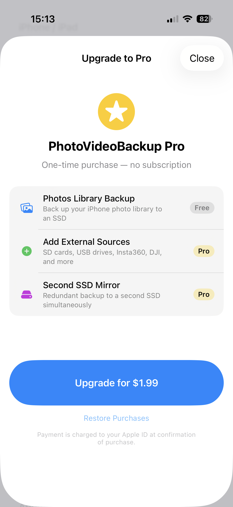
3 您需要准备什么
| iPhone / iPad | Android | |
|---|---|---|
| 设备 | 带 USB-C 接口的 iPhone（iPhone 15 及以上），iOS 16 及以上 | Android 手机或平板，Android 9 及以上 |
| 驱动器 | 任何 USB-C SSD（Samsung T7、SanDisk Extreme、WD My Passport…） | 任何 USB-C SSD 或 U 盘，或手机上的一个文件夹 |
| 集线器或读卡器（可选） | 一个小型 USB-C 集线器，可同时连接 SSD 和读卡器 | USB-C 读卡器，或 OTG 集线器 |
4 首次启动与权限
欢迎界面会介绍应用和五种典型连接方式 —— 从最简单的手机 → SSD，到通过 VPN 访问的 NAS。点按开始使用。
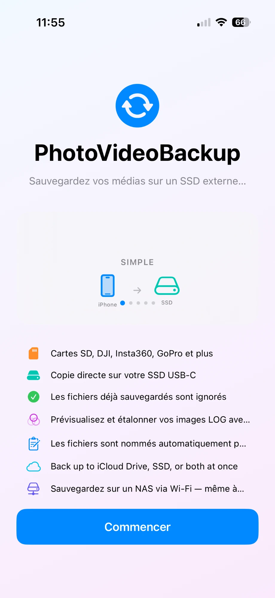
- iPhone / iPad：允许对照片图库的完全访问。没有它，应用无法读取您的照片。
- Android：允许访问您的照片和视频。同时允许访问照片的位置信息 —— 否则 Android 会从它提供的文件中去掉 GPS 数据，备份就不是原件了。请允许通知，以便备份结束时收到提醒。
5 设置设备名称和目标位置
- 打开设置标签页。在设备部分输入一个文件夹名称 —— 例如安娜的 iPhone或 Pixel 8。它会成为驱动器上的文件夹名，这样两部手机备份到同一个驱动器时互不混淆。设置名称之前，备份不会开始。
- 连接您的驱动器。
- 在目标位置下点按选择…，在系统文件浏览器中选择该驱动器或其中的文件夹。在 Android 上，您也可以选择手机存储中的文件夹。
- 驱动器名称会显示在“设置”和“备份”标签页中，并附有可用空间。只需设置一次：下次应用会自动识别该驱动器。
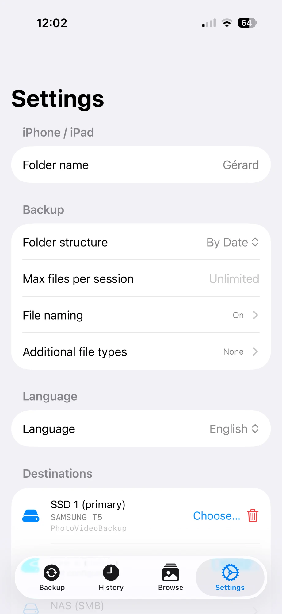
6 备份您的照片和视频
打开备份标签页。顶部显示您的目标位置及可用空间。在来源中，照片图库一行显示您的设备名称。点按其备份按钮。
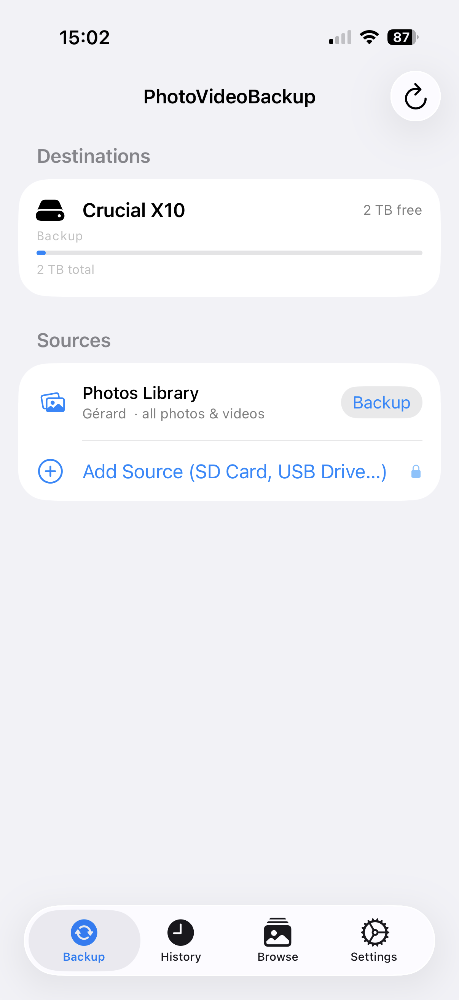
应用先分析图库，然后开始复制。第一次备份耗时最长；之后只复制新增内容，快得多。
- 仅存储在 iCloud / Google 相册中的照片会先被下载 —— 需要网络连接和一些时间。
- 应用把每个文件直接写入目标位置，因此即使手机几乎已满也能工作。
- 您可以离开应用：备份结束时会收到通知。
7 备份相机存储卡（Pro）
- 将读卡器连接到手机并插入存储卡（如果 SSD 也要保持连接，请使用集线器）。
- 在“备份”标签页点按添加来源（SD 卡、USB…），在文件浏览器中找到存储卡并确认。
- 给来源起个名字 —— Blackmagic、日本之旅…… 设备类型会被自动识别。
- 点按该来源行上的备份。
| 识别的设备 | 备份的内容 |
|---|---|
| DJI Mini 3 Pro | 照片、视频、DNG 和遥测数据（.srt） |
| DJI 360 / Action（Neo 2…） | 视频、照片、DNG、音频和遥测数据（.srt） |
| Insta360（X5…） | .insv、.insp 和 .lrv 文件 |
| GoPro HERO | 视频和照片；跳过代理文件（.lrv）和缩略图文件（.thm） |
| 其他设备 | 常见的照片、视频和 RAW 格式 |
要从列表中移除某个来源，请使用红色的–（iPhone）或该行的移除按钮（Android）。不会删除任何文件。
8 备份进行时
点按“备份”后，备份进行中面板会立即出现。先是正在准备…（连接目标位置），然后是正在分析来源…，并实时显示已找到的文件数 —— 图库很大时可能要等一会儿，并没有卡住。
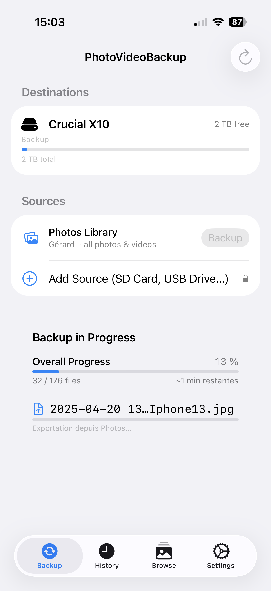
| 阶段 | 应用在做什么 |
|---|---|
| 分析 | 统计文件，并检查哪些需要复制。 |
| 复制 | 将文件写入目标位置。 |
| 校验 | 重新读取副本，并与原件比对。 |
| 已跳过 | 该文件已经备份过 —— 无需处理。 |
停止按钮可随时干净地结束备份。“设置 → 备份”中还有每次会话最大文件数限制：留空表示不限制。
9 备份完成之后
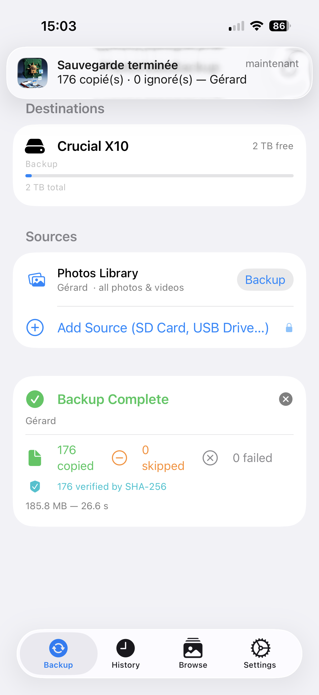
| 数字 | 含义 |
|---|---|
| 已复制 | 首次保存到目标位置的文件。 |
| 已跳过 | 已经存在的文件 —— 正常且安全。 |
| 失败 | 无法复制的文件（很少见）。 |
失败可能源于存储卡损坏、驱动器已满、连接中断，或某个文件对于剩余空间来说太大 —— 只会报告该文件，其余继续。腾出空间或重新连接后再次运行备份：缺少的文件会被补上。
10 历史记录与报告
历史记录标签页列出每一次备份：来源、目标位置、文件夹结构、文件数量，以及一种颜色 —— 绿色表示成功，橙色表示部分完成，红色表示有失败。
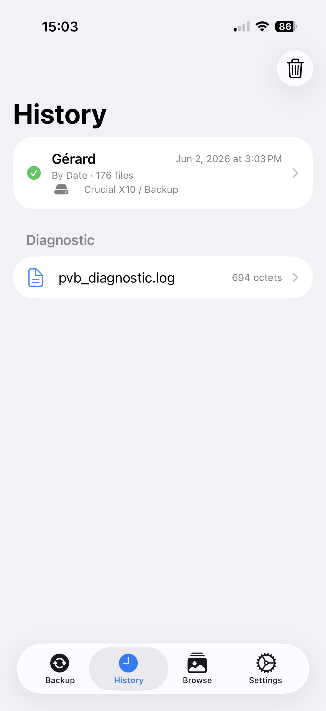
部分完成表示备份提前结束，报告会说明是三种原因之一：您点按了停止、达到了文件数限制，或某个目标位置断开连接。重新连接驱动器后再次运行 —— 会从中断处继续。
点按某个会话可查看报告：摘要、SHA-256 状态，以及已复制、已跳过和失败文件的列表 —— 并附有每个失败的原因。有两个目标位置时，报告会分别显示每个驱动器。
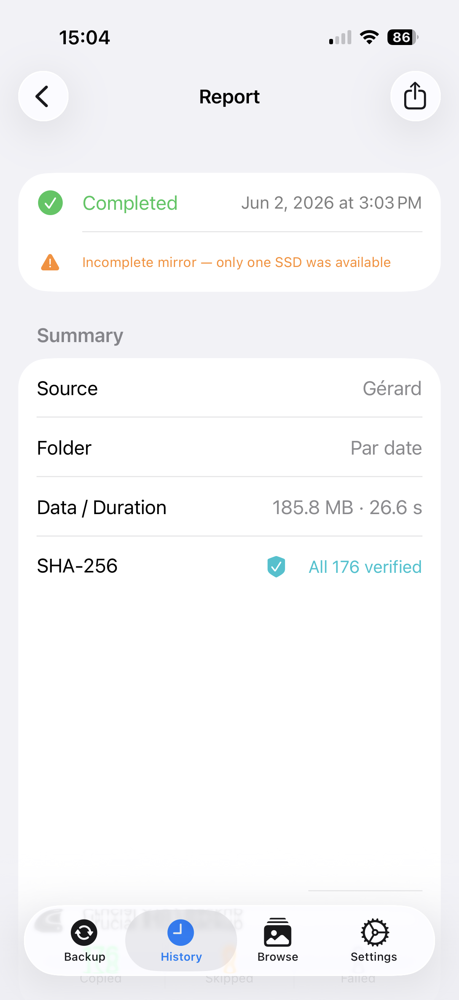
确认备份无误后，删除源文件…可以释放存储卡或图库的空间。它只提供已复制并已校验的文件，并且需要输入四位数字验证码来确认。您的备份不受影响。对于照片，iPhone 和 Android 系统还会再要求一次确认。
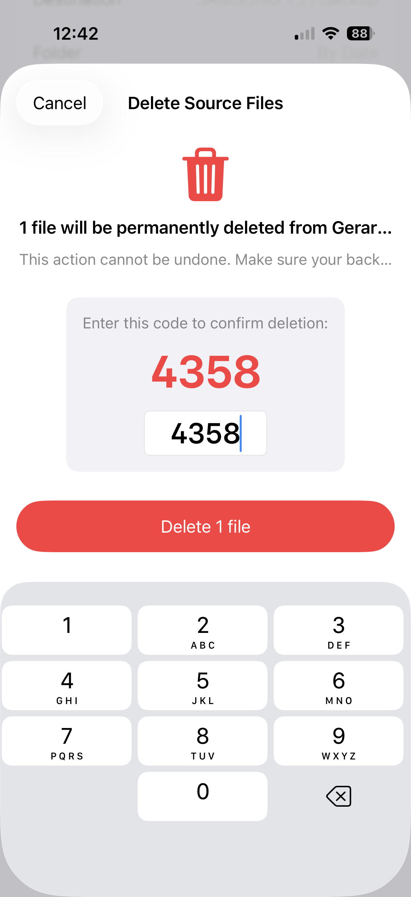
11 浏览、查看和分享您的备份
浏览标签页可在应用内查看驱动器上的内容：每个设备一个文件夹，然后是按日期的文件夹，再是缩略图网格。点按照片可全屏打开 —— 滑动切换文件，双指捏合缩放 —— 或点按视频播放。驱动器必须已连接。
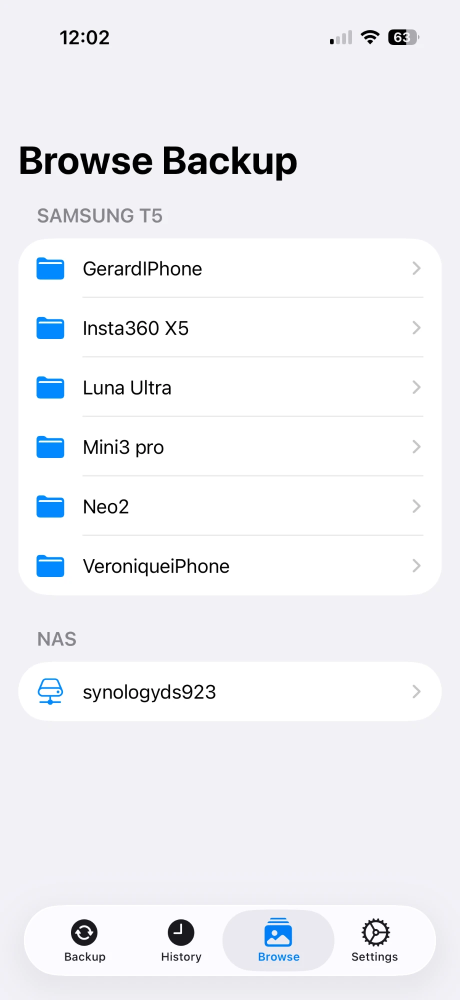
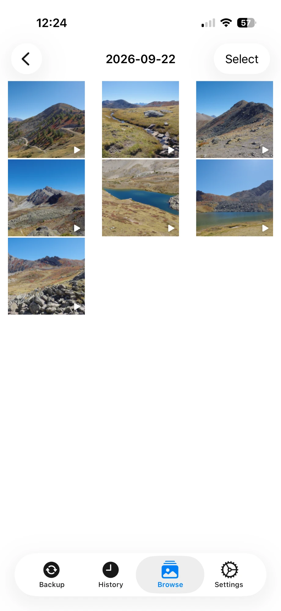
要把文件发送到别处：点按选择，勾选文件，然后点按共享 —— AirDrop、信息、电子邮件或其他应用。
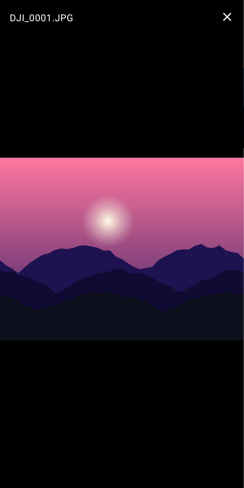
对于 NAS，“浏览”会列出文件，只有在您打开时才下载该文件。
12 文件夹与文件名
在设置 → 备份中，文件夹结构决定设备文件夹的组织方式：Flat（平铺）、By month（按月）、By date（按日期，默认）或 By year / month（年 / 月）。“浏览”标签页会适应驱动器上已有的内容。
文件命名在文件首次复制时就给它最终的名称 —— 它绝不会先以相机名称保存、事后再改名。打开备份时重命名文件并编辑模板：点按一个占位符即可插入，其余内容均为字面文本。示例一行会显示结果。
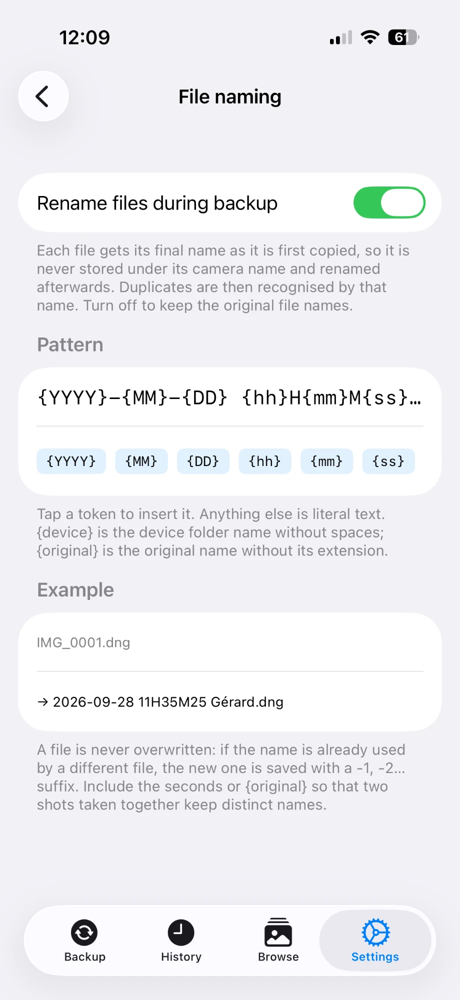
| 占位符 | 替换为 |
|---|---|
| {YYYY} {MM} {DD} | 拍摄的年、月、日 |
| {hh} {mm} {ss} | 拍摄的时、分、秒（本地时间） |
| {device} | 设备文件夹名称，不含空格 |
| {original} | 原始文件名，不含扩展名 |
- 绝不会覆盖任何内容。如果名称已被另一个文件占用，新文件会加上
-1、-2… 后缀。请在模板中包含秒，让同时拍摄的两张照片保持不同的名称。 - 重复文件通过该名称识别。已备份的文件会被跳过 —— 即使您之后编辑过它 —— 而同名的不同文件会被分开保存。
- 已有文件不会被重命名。该配置只适用于从现在起复制的文件。关闭配置时（默认），文件保留相机名称。
您还可以添加额外的文件扩展名，与媒体文件一起复制 —— 例如 gpx GPS 日志。
13 LUT 调色：为 LOG 素材赋予风格（Pro）
以 LOG 拍摄的素材（DJI D-Log M、GoPro Protune…）在应用 LUT 之前看起来平淡发灰。在“浏览”中，为设备文件夹分配 LUT，即可在应用内预览和调色。
- 打开设备文件夹，在 LUT 调色中点按分配 LUT…，然后点按导入 LUT (.cube)…。任何标准
.cube文件都可以（DaVinci Resolve、Final Cut Pro、相机厂商提供的）。 - 点按该文件夹中的任意视频：播放时会实时应用 LUT。此预览免费。
- 要生成永久副本（Pro），点按选择，选好视频，再点按调色。每个视频会以内嵌 LUT 的方式重新编码为 H.265，保存到名为设备 (Graded) 的同级文件夹中。
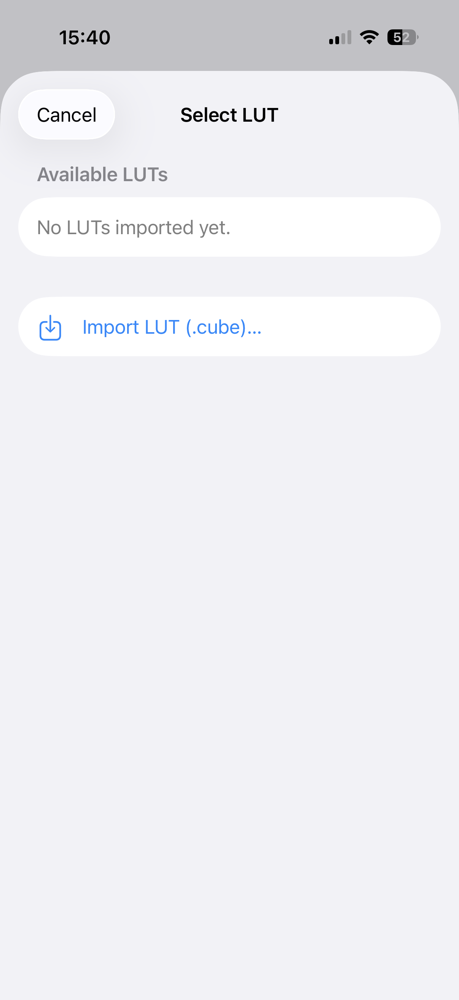
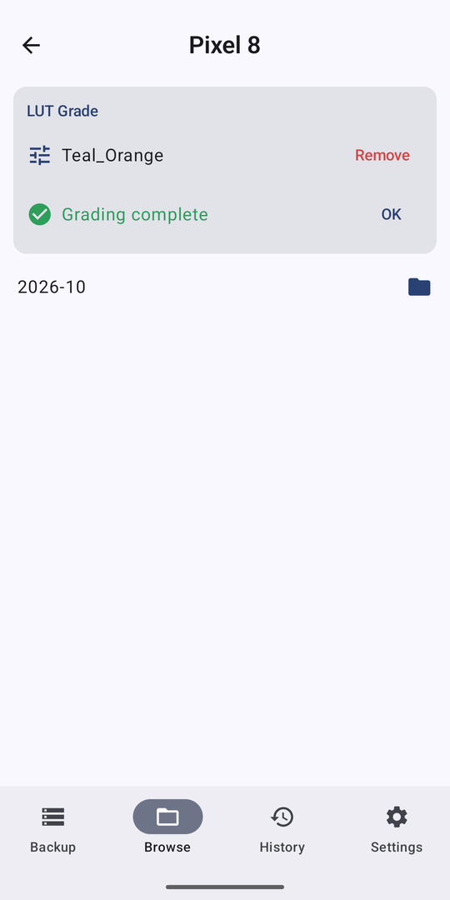
- 调色逐个视频进行，绝不是“全部”—— 一个文件夹常常混有 LOG 和普通片段，而 LOG LUT 会毁掉普通片段。
- 已调色的文件会被跳过，因此可以放心重新运行。可随时取消：已完成的文件会保留。
- 调色很耗资源：请保持应用打开、驱动器连接。手机可能会发热。
- 对于 NAS，片段会先下载，在手机上调色，再上传到 NAS 上的设备 (Graded) 文件夹 —— 速度较慢，且会消耗流量。
14 同时备份到两个目标位置（Pro）
在“设置”中添加第二个目标位置：每个文件会同时复制到两处 —— 两个驱动器，或一个驱动器加一台 NAS。备份用时不会翻倍。如果某个目标位置出故障或消失，另一个会继续，报告会说明哪里缺少什么。
15 通过 Wi-Fi 备份到 NAS（Pro）
除了驱动器，或代替驱动器，您还可以通过网络直接备份到 NAS（Synology、QNAP、TrueNAS，以及任何支持 SMB 的设备）。无需线缆，无需云端，每个文件都经过 SHA-256 校验。
- 在 NAS 上启用 SMB 文件共享，并为某个用户授予共享文件夹的读写权限。
- 在应用中：设置 → 目标位置 → NAS (SMB)。
- 填写主机（如
192.168.1.20）、共享名（如photo）、可选的文件夹，以及您的用户名和密码。密码保存在 iOS 钥匙串或 Android Keystore 中。 - 点按测试连接：会提示连接成功以及找到的项目数。然后点按保存。
NAS 现在会出现在“备份”标签页，并显示可用空间。只要 NAS 可以访问，您也可以在外出时备份 —— 最简单安全的方法是使用 Tailscale 这样的 VPN：在 NAS 和手机上都安装它，然后把 NAS 的 100.x.x.x 地址作为主机。
16 Android 与 iPhone 的区别
两个应用使用同一套引擎：相同的重复检测、相同的命名、相同的 SHA-256 校验、相同的索引 —— 在其中一个上开始的备份，会被另一个识别。
| iPhone / iPad | Android | |
|---|---|---|
| 图库来源 | 照片图库 | 图库（照片和视频） |
| 目标位置 | 在“文件”中选择的文件夹（SSD、iCloud Drive、SMB） | 用系统选择器选择的文件夹（SSD、USB、手机存储），NAS |
| 后台 | 约 30 秒，之后备份期间屏幕保持常亮 | 前台通知使其持续运行，并带有停止按钮 |
| Pro | App 内购买（App Store） | 一次性购买（Google Play） |
| Mac | 可在 Apple 芯片 Mac 上运行（“为 iPad 设计”） | — |
.nomedia 文件），以免备份被再次备份。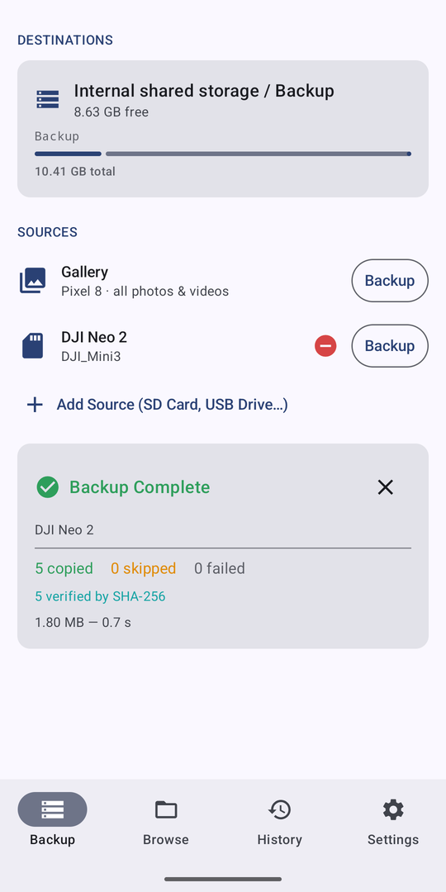
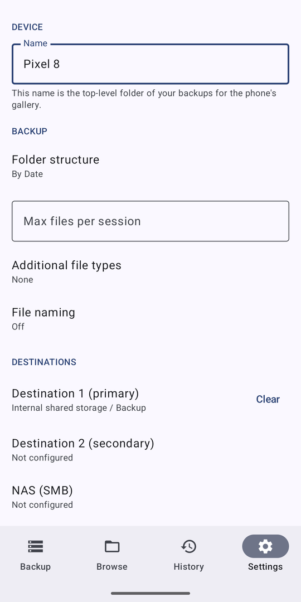
17 常见问题
再次运行时会重复复制同一个文件吗？不会。每个文件在目标位置都有一个名称，下次备份会按该名称查找。如果应用的记录显示它来自同一个原件，就会跳过 —— 即使您之后编辑过。只有真正不同、却同名的文件才会加上 -1、-2… 后缀，而且绝不会覆盖任何内容。
应用把已备份的记录保存在哪里？保存在它自己的数据库中，以及每个目标位置根目录下的一个小型隐藏文件 .pvb-index.json 中。这份副本会随备份一起转移：重新安装后，或换一部手机，应用读取它就不会重复复制。您可以不管它；如果删除，应用会重新建立。
可以同时备份到 NAS 和驱动器吗？可以 —— 每个已连接的目标位置会同时收到备份。
连接 NAS 超时。通常是 NAS 无法访问：请检查是否在同一 Wi-Fi 下（或 VPN 已开启）、是否启用了 SMB 共享，以及 NAS 防火墙是否允许该连接。
可以让两部手机使用同一个驱动器吗？可以。在“设置”中为每部手机设置不同的文件夹名称；各自会在驱动器上创建自己的文件夹。
进度条停在 3% 似乎卡住了。最先处理的文件通常是大视频。请等几分钟。
我的存储卡显示为“Documents”。有些相机使用通用文件夹。添加来源时请输入一个有意义的名称。
手机几乎满了还能备份吗？可以。文件以流的方式直接写入目标位置，每次只占用几 MB。只有单独备份到 NAS 时，才需要每次容纳一个文件的空间。确实放不下的文件会被报告为失败，其余继续。
我的数据会被发送到什么地方吗？不会。一切都发生在您的手机与驱动器或 NAS 之间。应用没有服务器，也没有账号。唯一的网络流量是发往您自己设置的 NAS，以及系统下载您自己的 iCloud / Google 照片。
支持哪些语言？英语、法语、德语、西班牙语、意大利语、葡萄牙语、简体中文和俄语。应用默认跟随手机语言；您可以在设置 → 语言中强制指定一种，无需重启。